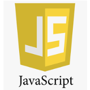

Web Design
About; Work; Blog; Contact
HTML
“Html is Hypertext Markup Language /html/ , and it’s a standard markup language for documents designed to be displayed in a web browser. It can be assisted by technologies such as Cascading Style Sheets /CSS/ and scripting languages such as Javascript. HTML elements are delimited by tags, written using angle brackets. “.
Short for HyperText Markup Language, the authoring language used to create documents on the World Wide Web. HTML is similar to SGML, although it is not a strict subset. HTML defines the structure and layout of a Web document by using a variety of tags and attributes.
CSS
Cascading Style Sheet(CSS) is used to set the style in web pages which contain HTML elements. It sets the background color, font-size, font-family, color, … etc property of elements in a web pages. There are three types of CSS which are given below: Inline CSS.
CSS works on HTML and also on any XML based mark up language. CSS is the language for describing the presentation of web pages, and these include colors, fonts, and layouts. The separation of HTML from CSS makes it easier to maintain sites, share style sheets across pages, and design pages to individual tastes.
JvaScript

JavaScript is a client scripting language which is used for creating web pages. It is a standalone language developed in Netscape. It is used when a webpage is to be made dynamic and add special effects on pages like rollover, roll out and many types of graphics.JavaScript is a scripting language used to create and control dynamic website content, i.e. anything that moves, refreshes, or otherwise changes on your screen without requiring you to manually reload a web page. Features like:
animated graphics,photo slideshows,autocomplete text suggestions and interactive forms.
A scripting language like JavaScript (JS, for those in the know) does the heavy lifting by telling computer programs like websites or web applications to “do something.” In the case of JavaScript, this means telling those dynamic features described earlier to do whatever it is they do—like telling images to animate themselves, photos to cycle through a slideshow, or autocomplete suggestions to respond to prompts.
It’s the “script” in JavaScript that makes these things happen seemingly on their own.
Meanwhile, because JavaScript is such an integral part of web functionality, all major web browsers come with built-in engines that can render JavaScript. This means JS commands can be typed directly into an HTML document, and web browsers will be able to understand them. In other words, using JavaScript doesn’t require downloading any additional programs or compilers.
A scripting language like JavaScript (JS, for those in the know) does the heavy lifting by telling computer programs like websites or web applications to “do something.” In the case of JavaScript, this means telling those dynamic features described earlier to do whatever it is they do like telling images to animate themselves, photos to cycle through a slideshow, or autocomplete suggestions to respond to prompts. It’s the “script” in JavaScript that makes these things happen seemingly on their own.
JQuery
jQuery is a lightweight, "write less, do more", JavaScript library. The purpose of jQuery is to make it much easier to use JavaScript on your website. jQuery takes a lot of common tasks that require many lines of JavaScript code to accomplish, and wraps them into methods that you can call with a single line of code. jQuery is a concise and fast JavaScript library that can be used to simplify event handling, HTML document traversing, Ajax interactions and animation for speedy website development. jQuery simplifies the HTML's client-side scripting, thus simplifying Web 2.0 applications development.
Bootstrap
Bootstrap is a potent front-end framework used to create modern websites and web apps. It's open-source and free to use, yet features numerous HTML and CSS templates for UI interface elements such as buttons and forms. Bootstrap also supports JavaScript extensions. is a framework to help you design websites faster and easier. It includes HTML and CSS based design templates for typography, forms, buttons, tables, navigation, modals, image carousels, etc. ... Here are some additional reasons to use Bootstrap: Bootstrap's responsive CSS adjusts to phones, tablets, and desktops.
It is a combination of HTML, CSS, and Javascript code designed to help build user interface components. Bootstrap was also programmed to support both HTML5 and CSS3. Also it is called Front-end-framework. Bootstrap is a free collection of tools for creating a websites and web applications.
GitHub
GitHub is a Git repository hosting service, but it adds many of its own features. While Git is a command line tool, GitHub provides a Web-based graphical interface. It also provides access control and several collaboration features, such as a wikis and basic task management tools for every project.
GitHub is a code hosting platform for version control and collaboration. It lets you and others work together on projects from anywhere. ... You'll create your own Hello World repository and learn GitHub's Pull Request workflow, a popular way to create and review code.
So what are the main benefits of using GitHub? To be honest, nearly every open-source project uses GitHub to manage their project. Using GitHub is free if your project is open source and includes a wiki and issue tracker that makes it easy to include more in-depth documentation and get feedback about your project.
Github is a web-based platform used for version control. Git simplifies the process of working with other people and makes it easy to collaborate on projects. Team members can work on files and easily merge their changes in with the master branch of the project. ... Cloning and Forking Github Repository.